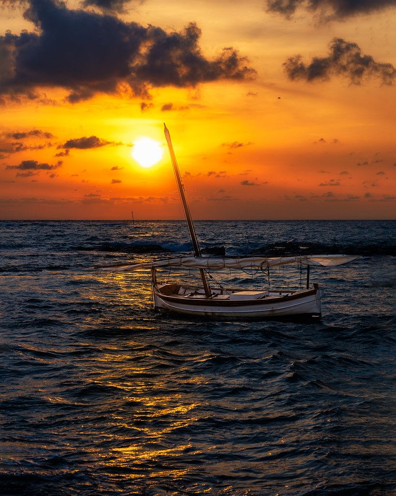

■ Stop
Stops & highlights along the way

Hand-picked road & gravel routes, local cafes, bike hire and your complete ride history — all in one place.
One of Europe's sunniest coasts — rideable year-round
Sea-level lagoon paths to serious Sierra climbs — all within 30 km
Via Verde del Campo de Cartagena + coastal promenades
Fly to Murcia–Corvera (RMU) ~40 min away, or Alicante (ALC) ~50 min. San Javier / MJV is military-only.
Carbon road & e-bikes delivered — Murcia Bike Hire, CCT, Cycle Classic Tours.
Mar–Jun & Sep–Nov are ideal. Summer is hot & dry — start early and carry water.
Flat coast & Campo de Cartagena for easy miles; real climbs inland and behind Cartagena / La Union.
Santiago de la Ribera or Los Alcazares — seafront, flat, and right on the Mar Menor cycle network.
The lagoon coast is bike-pathed; train & bus link to Cartagena and Murcia. Quietest roads inland midweek.
Choose your adventure